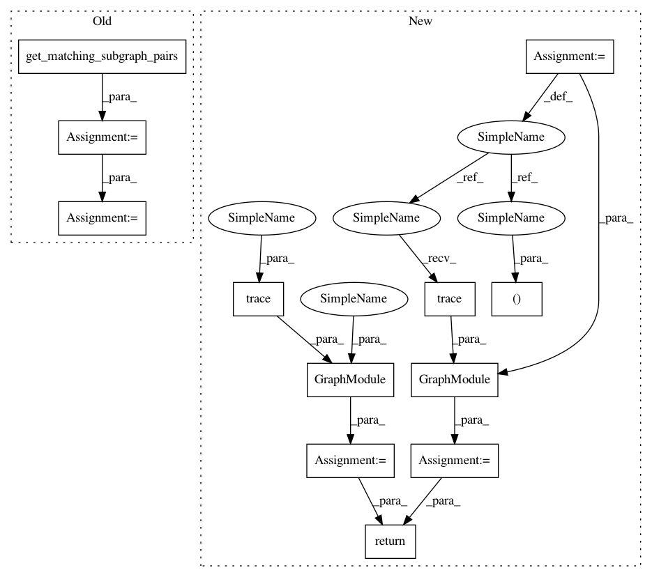

d73e36a44ab3fa760d385c881db0fa393a557a65,torch/quantization/ns/numeric_suite_core_apis_fx.py,,prepare_model_outputs,#Any#Any#Any#Any#Any#,195
Before Change
gm_b: GraphModule,
logger_cls: Callable,
) -> Tuple[GraphModule, GraphModule]:
matched_subgraph_pairs = get_matching_subgraph_pairs(gm_a, gm_b)
nodes_and_names_to_instrument_a = []
nodes_and_names_to_instrument_b = []
for match_name, (subgraph_a, subgraph_b) in matched_subgraph_pairs.items():
node_start_a, node_end_a = subgraph_a
node_start_b, node_end_b = subgraph_b
// Note: for matching activations we always use the end nodes,
// such as observing the output of relu in linear-relu
nodes_and_names_to_instrument_a.append((node_end_a, match_name))
nodes_and_names_to_instrument_b.append((node_end_b, match_name))
gm_a = prepare_single_model_output(
name_a, gm_a, nodes_and_names_to_instrument_a, logger_cls)
gm_b = prepare_single_model_output(
name_b, gm_b, nodes_and_names_to_instrument_b, logger_cls)
After Change
model_b: nn.Module,
logger_cls: Callable,
) -> Tuple[nn.Module, nn.Module]:
tracer_a, tracer_b = NSTracer(), NSTracer()
gm_a = GraphModule(model_a, tracer_a.trace(model_a))
gm_b = GraphModule(model_b, tracer_b.trace(model_b))
return _prepare_model_outputs_impl(name_a, gm_a, name_b, gm_b, logger_cls)
def add_activation_info_to_dict(
model: nn.Module,
In pattern: SUPERPATTERN
Frequency: 3
Non-data size: 12
Instances
Project Name: pytorch/pytorch
Commit Name: d73e36a44ab3fa760d385c881db0fa393a557a65
Time: 2021-03-12
Author: vasiliy@fb.com
File Name: torch/quantization/ns/numeric_suite_core_apis_fx.py
Class Name:
Method Name: prepare_model_outputs
Project Name: pytorch/pytorch
Commit Name: d73e36a44ab3fa760d385c881db0fa393a557a65
Time: 2021-03-12
Author: vasiliy@fb.com
File Name: torch/quantization/ns/numeric_suite_core_apis_fx.py
Class Name:
Method Name: compare_weights
Project Name: pytorch/pytorch
Commit Name: d73e36a44ab3fa760d385c881db0fa393a557a65
Time: 2021-03-12
Author: vasiliy@fb.com
File Name: torch/quantization/ns/numeric_suite_core_apis_fx.py
Class Name:
Method Name: prepare_model_outputs
Project Name: pytorch/pytorch
Commit Name: d73e36a44ab3fa760d385c881db0fa393a557a65
Time: 2021-03-12
Author: vasiliy@fb.com
File Name: torch/quantization/ns/numeric_suite_core_apis_fx.py
Class Name:
Method Name: prepare_model_with_stubs